apps/pettine/fixtures/VETTORIALE-6-colori-v2-gruppo-blocchi.svg · 38 tagli · 2394 passaggi cuciti · 2.70 m a vista · 18 casi registrati (6 per tipo)
Ogni scheda è il momento di una decisione del filo: cosa c'era intorno, cosa ha fatto il sistema, e sotto lo spazio per come andrebbe fatto.
Come si risponde, da qualunque pc. Apri RISPOSTE.md su GitHub (si apre già in modifica), cerca la sezione col nome del caso, scrivi sotto «Come andrebbe fatto» e premi Commit changes. Al commit il sito si rigenera da solo: dopo qualche minuto la tua risposta compare qui, accanto al disegno, e Claude la legge dal repo. Se un caso vuole un disegno, mettilo nella cartella apps/pettine/lab/da-lorenzo/ e nominalo nella risposta.
tinta dell'ago, libera dietro libero: base senza denti sopra denti già cuciti base cucita coperta tinte dopo tinte prima · — riga cucita — riga da fare (tratteggio = sormonto) · — strada ● a vista · ● dove il filo è ● dove deve andare
a1-1-96 · innesto · ago 1 · da riga 1 a riga 96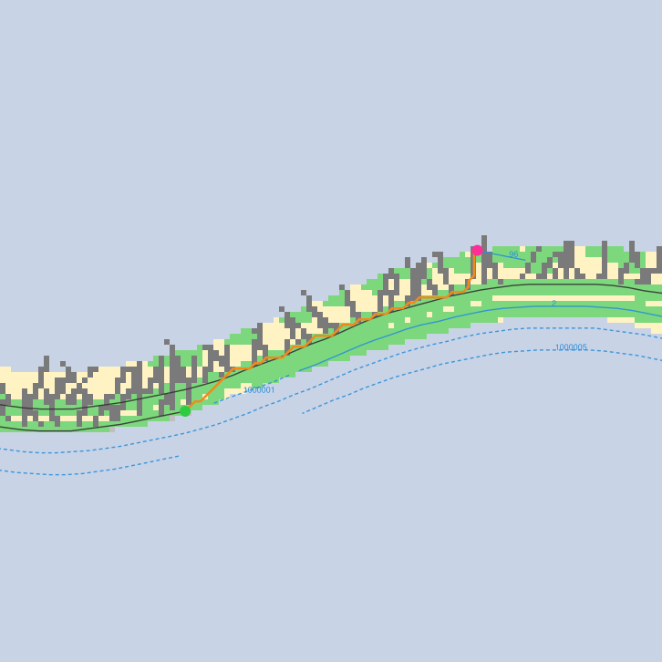
Cosa ha fatto il sistema. Passaggio cucito: 30 mm in linea d'aria, 35 mm di strada, 0.0 mm a vista, costo medio 0.9.
strada 34.7 mm per 30.5 mm in linea d'aria · a vista 0 mm · costo medio 0.88
Come andrebbe fatto (Lorenzo). ancora da scrivere · scrivi la risposta per a1-1-96
a1-1000001-97 · innesto · ago 1 · da riga 1000001 a riga 97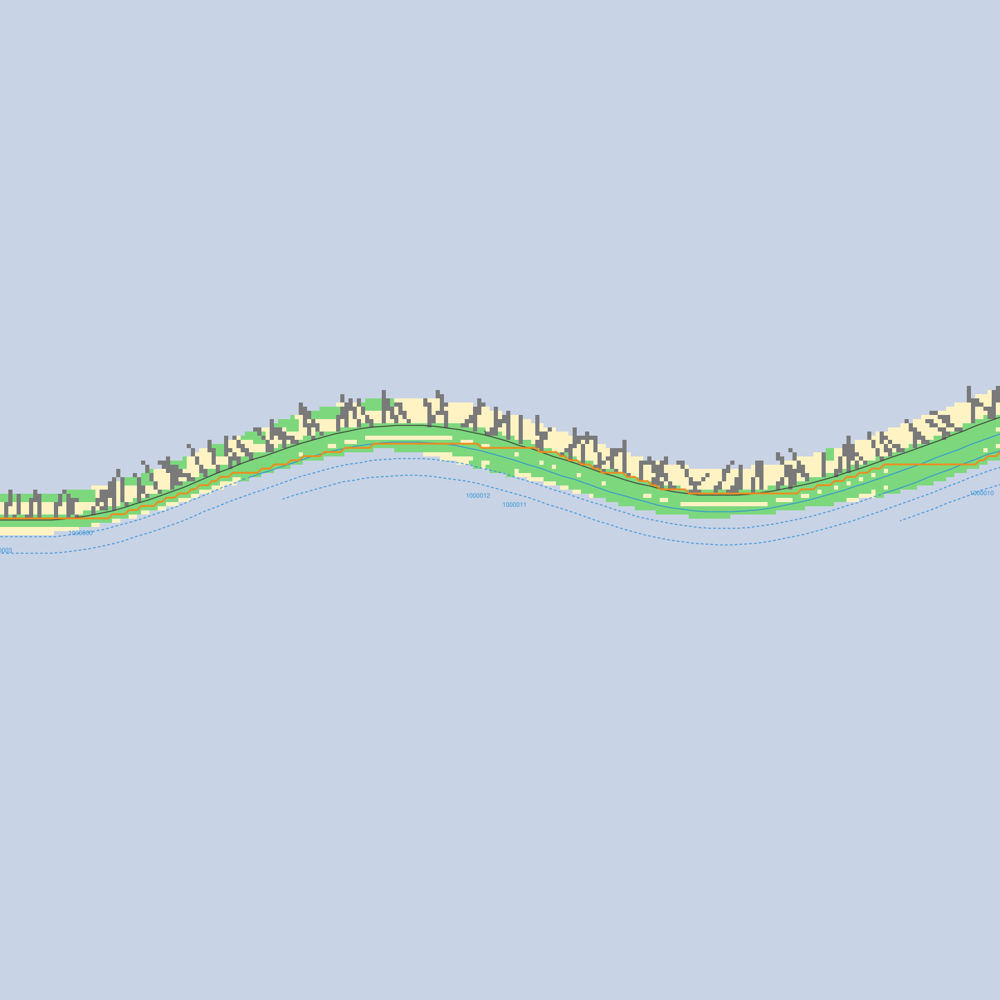
Cosa ha fatto il sistema. Passaggio cucito: 260 mm in linea d'aria, 281 mm di strada, 0.5 mm a vista, costo medio 0.8.
strada 281.5 mm per 259.9 mm in linea d'aria · a vista 0.5 mm · costo medio 0.79
Come andrebbe fatto (Lorenzo). ancora da scrivere · scrivi la risposta per a1-1000001-97
a1-1000000-2 · innesto · ago 1 · da riga 1000000 a riga 2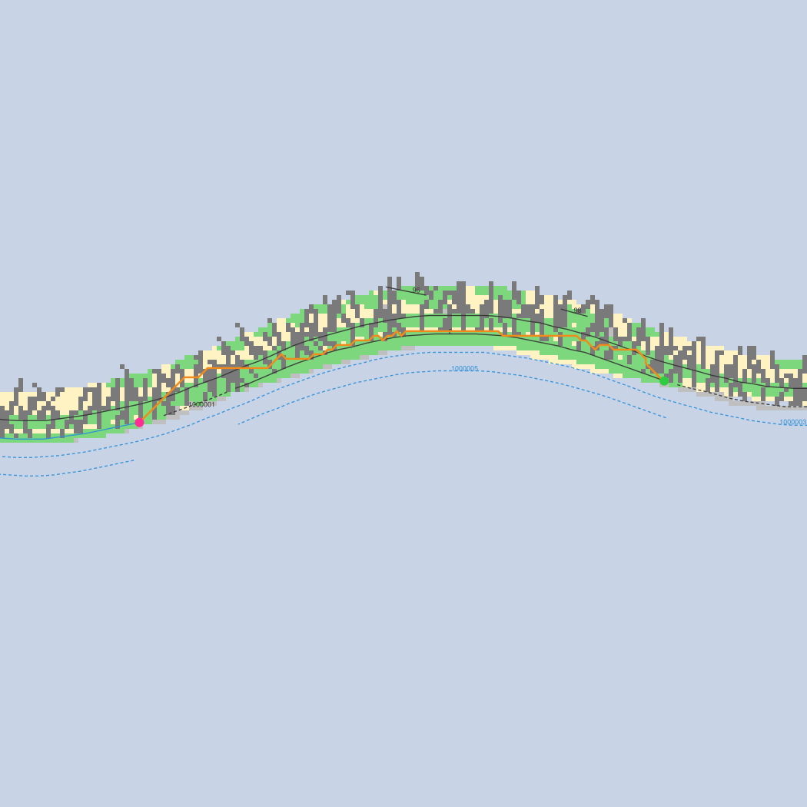
Cosa ha fatto il sistema. Passaggio cucito: 57 mm in linea d'aria, 63 mm di strada, 0.0 mm a vista, costo medio 0.2.
strada 63.4 mm per 57.1 mm in linea d'aria · a vista 0 mm · costo medio 0.22
Come andrebbe fatto (Lorenzo). ancora da scrivere · scrivi la risposta per a1-1000000-2
a1-2-3 · passaggio · ago 1 · da riga 2 a riga 3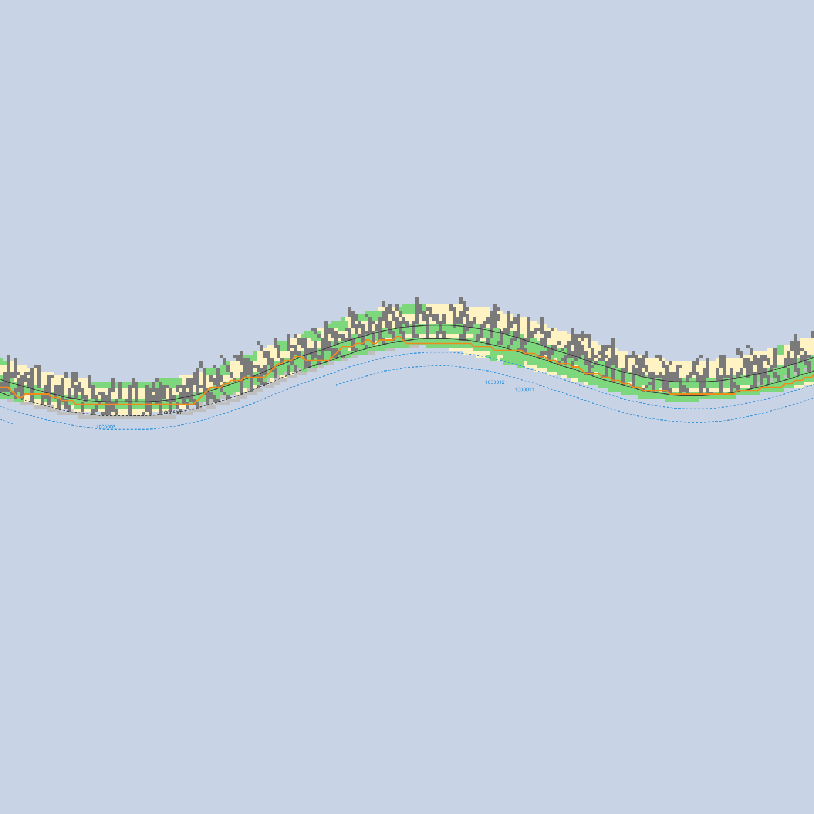
Cosa ha fatto il sistema. Passaggio cucito: 231 mm in linea d'aria, 249 mm di strada, 0.0 mm a vista, costo medio 0.2.
strada 248.9 mm per 230.7 mm in linea d'aria · a vista 0 mm · costo medio 0.22
Come andrebbe fatto (Lorenzo). ancora da scrivere · scrivi la risposta per a1-2-3
a1-2-3 · innesto · ago 1 · da riga 2 a riga 3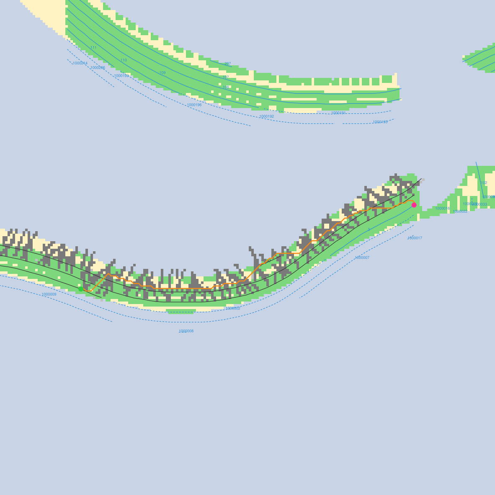
Cosa ha fatto il sistema. Passaggio cucito: 68 mm in linea d'aria, 77 mm di strada, 0.0 mm a vista, costo medio 0.3.
strada 77.4 mm per 68.4 mm in linea d'aria · a vista 0 mm · costo medio 0.27
Come andrebbe fatto (Lorenzo). ancora da scrivere · scrivi la risposta per a1-2-3
a1-1000005-1000004 · passaggio · ago 1 · da riga 1000005 a riga 1000004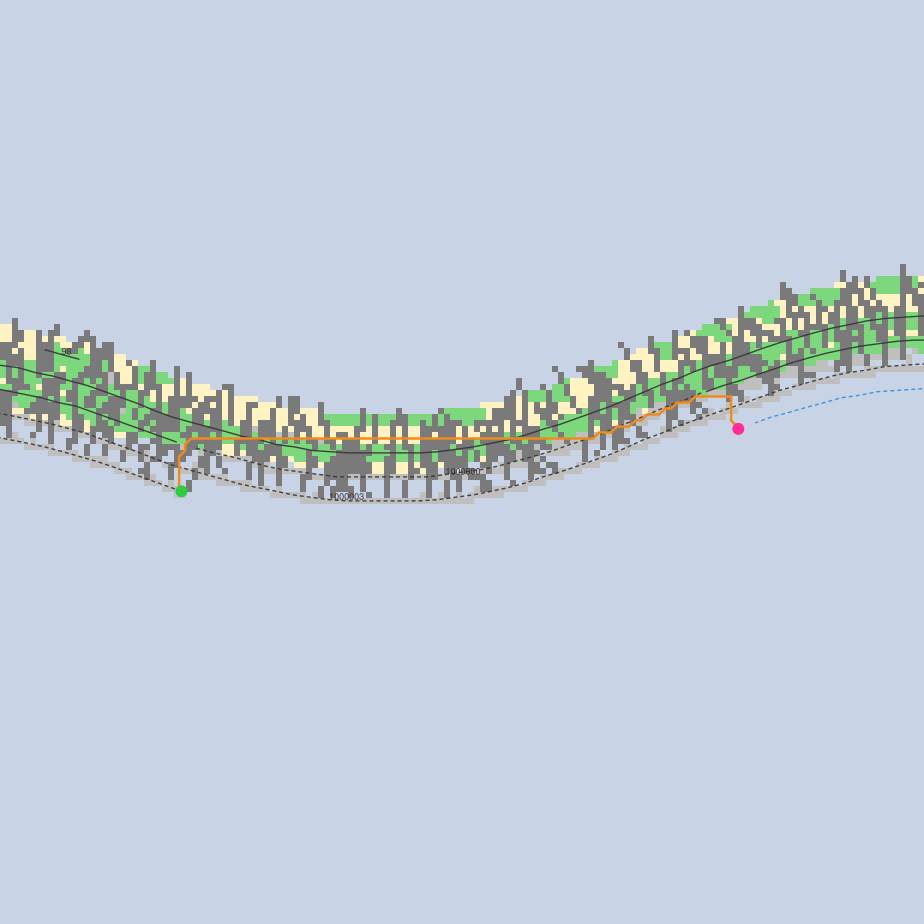
Cosa ha fatto il sistema. Passaggio cucito: 47 mm in linea d'aria, 54 mm di strada, 0.0 mm a vista, costo medio 0.5.
strada 54.1 mm per 46.7 mm in linea d'aria · a vista 0 mm · costo medio 0.46
Come andrebbe fatto (Lorenzo). ancora da scrivere · scrivi la risposta per a1-1000005-1000004
a1-1000012-1000010 · innesto · ago 1 · da riga 1000012 a riga 1000010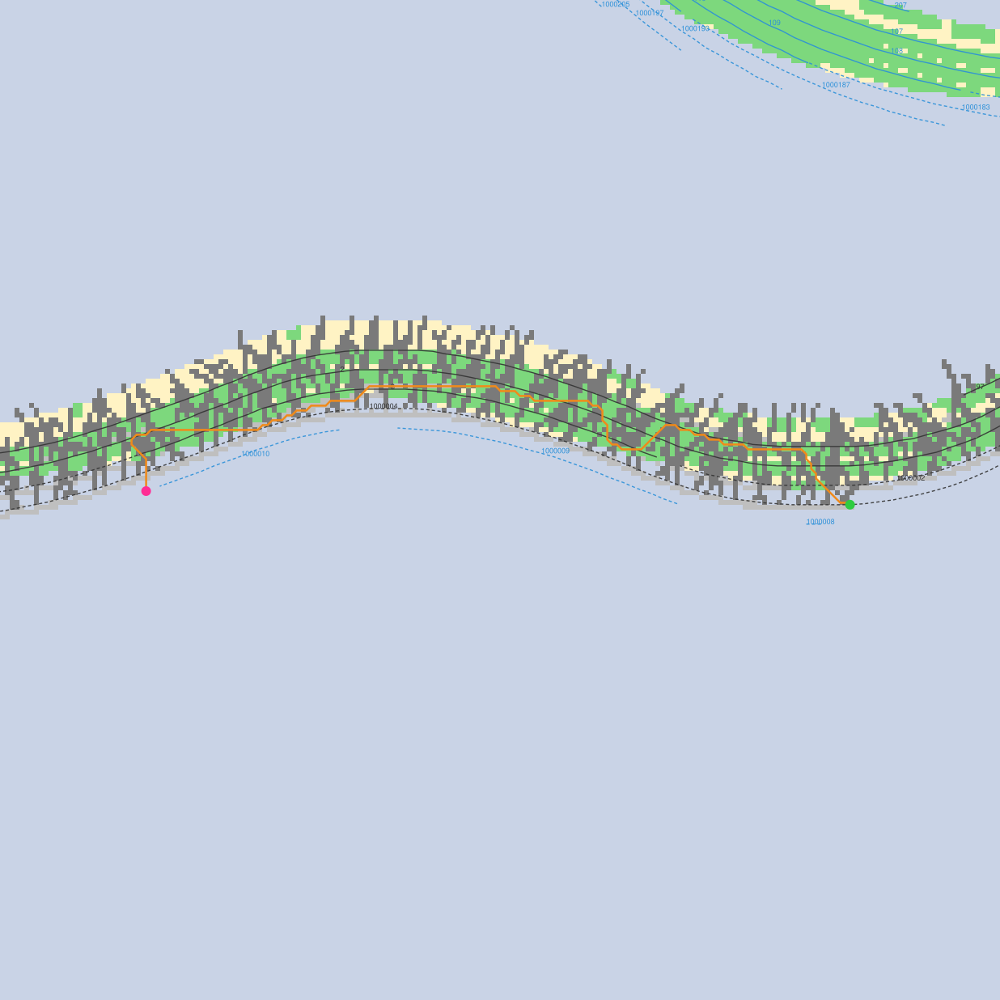
Cosa ha fatto il sistema. Passaggio cucito: 73 mm in linea d'aria, 92 mm di strada, 0.0 mm a vista, costo medio 0.4.
strada 91.8 mm per 72.6 mm in linea d'aria · a vista 0 mm · costo medio 0.44
Come andrebbe fatto (Lorenzo). ancora da scrivere · scrivi la risposta per a1-1000012-1000010
a1-100-398 · passaggio · ago 1 · da riga 100 a riga 398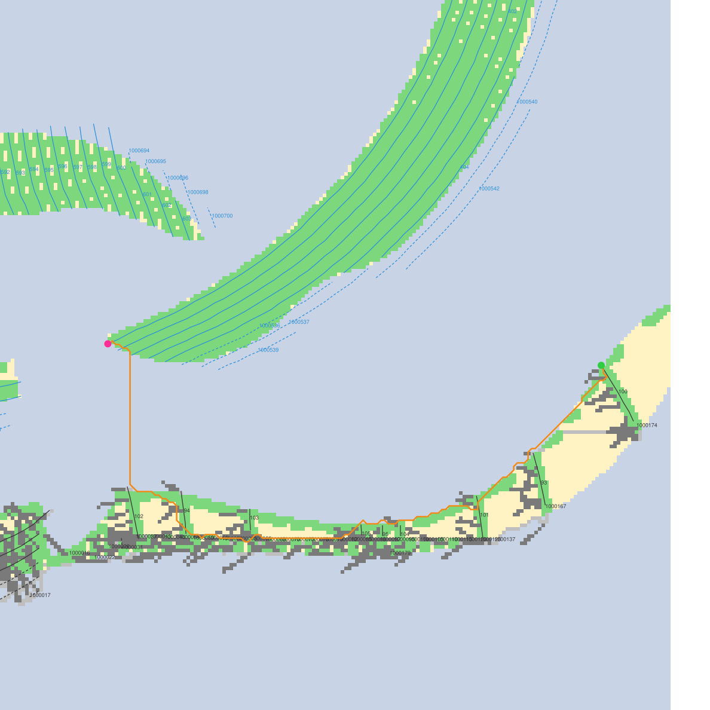
Cosa ha fatto il sistema. Passaggio cucito: 69 mm in linea d'aria, 109 mm di strada, 0.0 mm a vista, costo medio 0.9.
strada 108.6 mm per 68.9 mm in linea d'aria · a vista 0 mm · costo medio 0.91
Come andrebbe fatto (Lorenzo). ancora da scrivere · scrivi la risposta per a1-100-398
a1-1000538-404 · innesto · ago 1 · da riga 1000538 a riga 404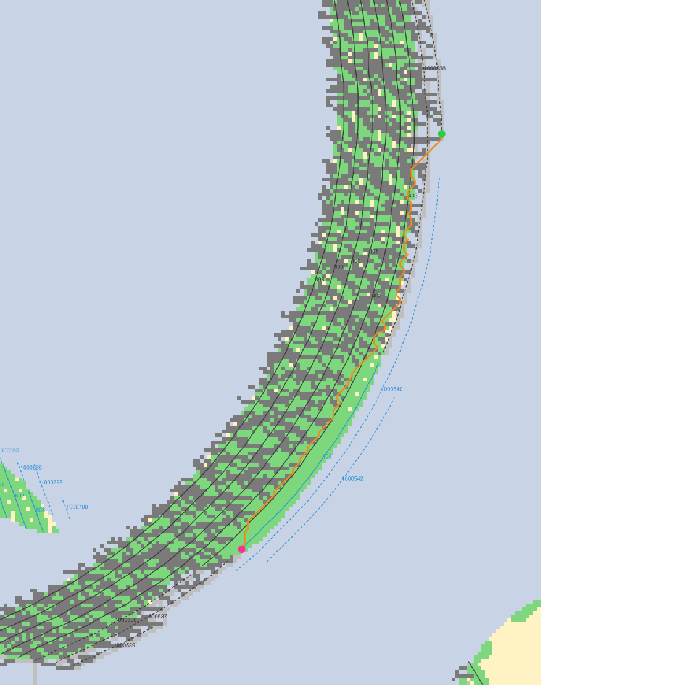
Cosa ha fatto il sistema. Passaggio cucito: 62 mm in linea d'aria, 72 mm di strada, 0.0 mm a vista, costo medio 1.2.
strada 71.7 mm per 62.3 mm in linea d'aria · a vista 0 mm · costo medio 1.23
Come andrebbe fatto (Lorenzo). ancora da scrivere · scrivi la risposta per a1-1000538-404
a1-1000629-475 · passaggio · ago 1 · da riga 1000629 a riga 475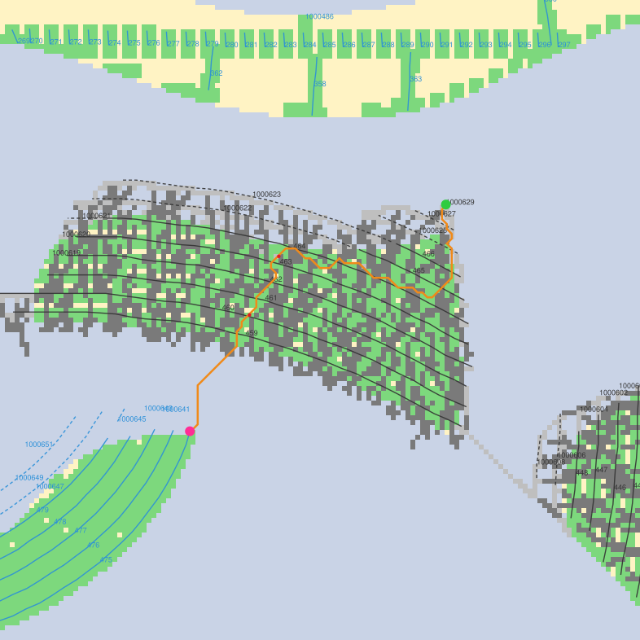
Cosa ha fatto il sistema. Passaggio cucito: 35 mm in linea d'aria, 53 mm di strada, 0.8 mm a vista, costo medio 1.1.
strada 52.6 mm per 35 mm in linea d'aria · a vista 0.8 mm · costo medio 1.11
Come andrebbe fatto (Lorenzo). ancora da scrivere · scrivi la risposta per a1-1000629-475
a1-263-1000330 · passaggio · ago 1 · da riga 263 a riga 1000330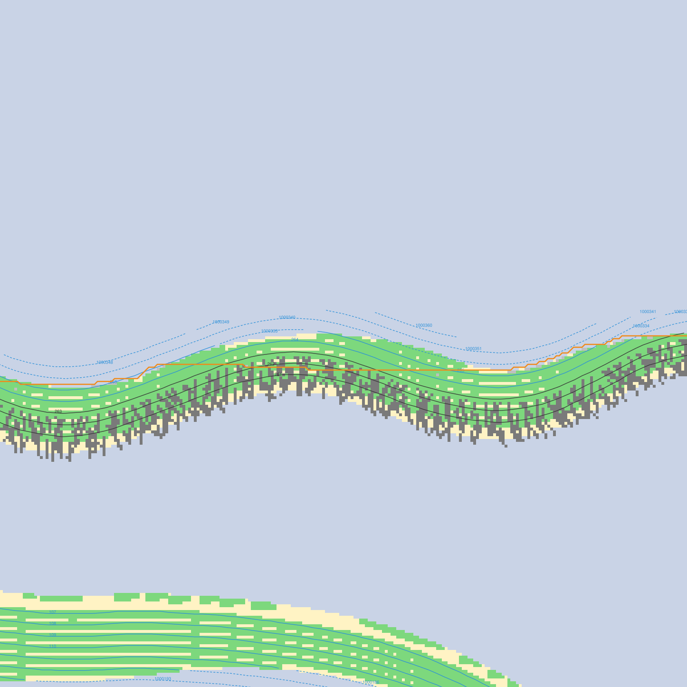
Cosa ha fatto il sistema. Passaggio cucito: 141 mm in linea d'aria, 150 mm di strada, 0.0 mm a vista, costo medio 0.2.
strada 149.8 mm per 141.3 mm in linea d'aria · a vista 0 mm · costo medio 0.22
Come andrebbe fatto (Lorenzo). ancora da scrivere · scrivi la risposta per a1-263-1000330
a1-265-1000335 · passaggio · ago 1 · da riga 265 a riga 1000335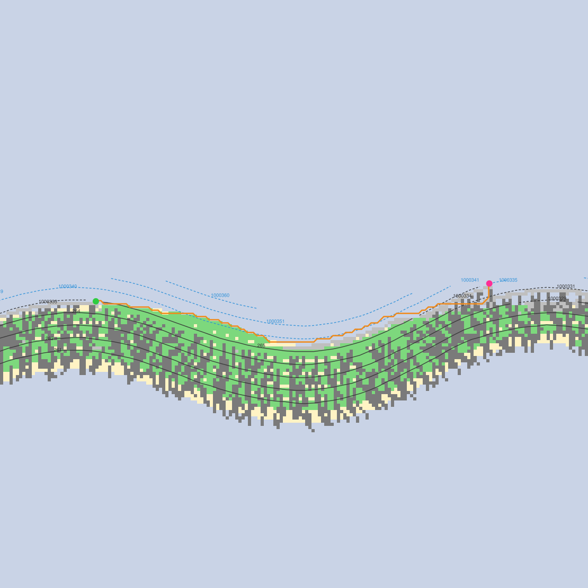
Cosa ha fatto il sistema. Passaggio cucito: 62 mm in linea d'aria, 70 mm di strada, 0.0 mm a vista, costo medio 0.4.
strada 69.6 mm per 62 mm in linea d'aria · a vista 0 mm · costo medio 0.44
Come andrebbe fatto (Lorenzo). ancora da scrivere · scrivi la risposta per a1-265-1000335
a2-1000373-218 · taglio · ago 2 · da riga 1000373 a riga 218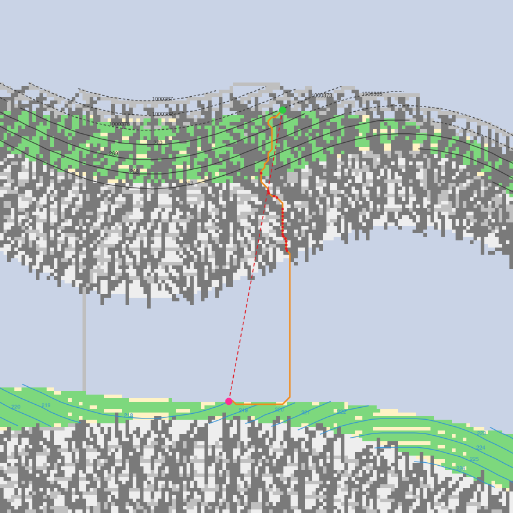
Cosa ha fatto il sistema. Nessuna strada nascosta accettabile: la macchina taglia. Distanza 41 mm.
strada 113.1 mm per 41.3 mm in linea d'aria · a vista 5.4 mm · costo medio 1.7
Come andrebbe fatto (Lorenzo). ancora da scrivere · scrivi la risposta per a2-1000373-218
a2-117-461 · taglio · ago 2 · da riga 117 a riga 461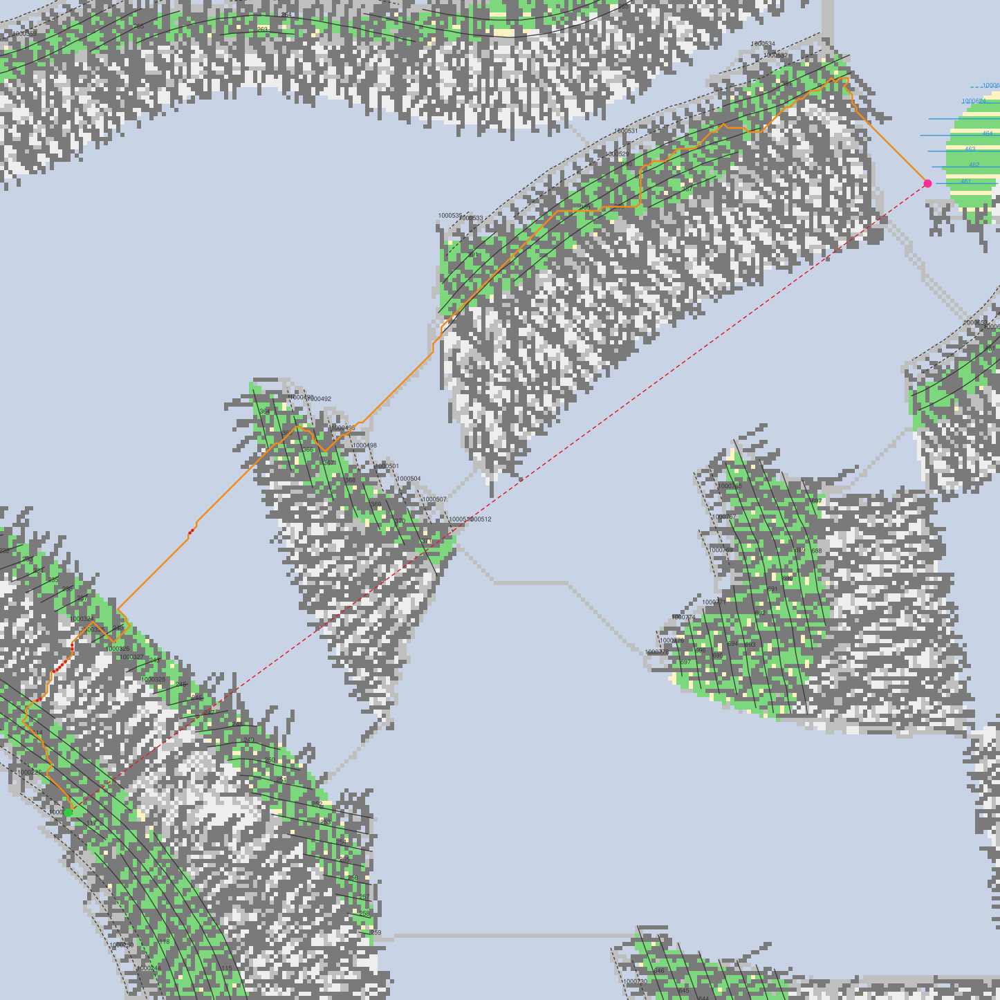
Cosa ha fatto il sistema. Nessuna strada nascosta accettabile: la macchina taglia. Distanza 128 mm.
strada 178.7 mm per 128.4 mm in linea d'aria · a vista 5.3 mm · costo medio 1.26
Come andrebbe fatto (Lorenzo). ancora da scrivere · scrivi la risposta per a2-117-461
a2-1000634-3 · taglio · ago 2 · da riga 1000634 a riga 3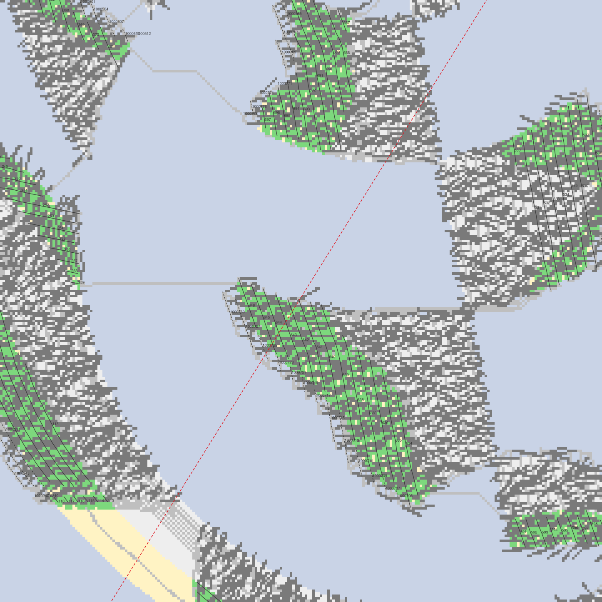
Cosa ha fatto il sistema. Nessuna strada nascosta accettabile: la macchina taglia. Distanza 254 mm.
strada 435.1 mm per 253.9 mm in linea d'aria · a vista 3.7 mm · costo medio 0.72
Come andrebbe fatto (Lorenzo). ancora da scrivere · scrivi la risposta per a2-1000634-3
a3-1000063-110 · taglio · ago 3 · da riga 1000063 a riga 110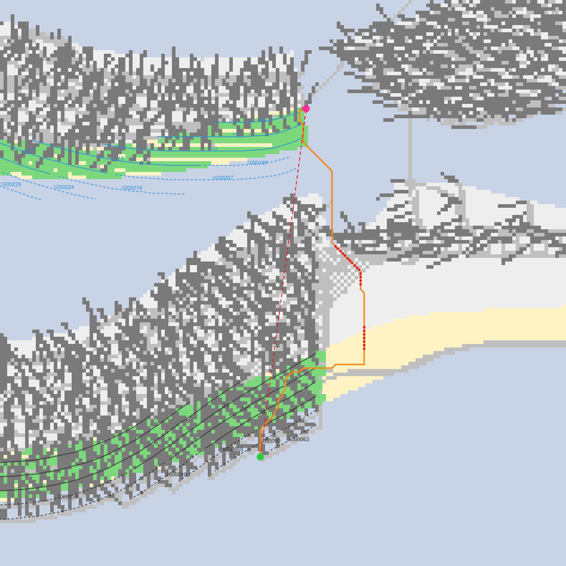
Cosa ha fatto il sistema. Nessuna strada nascosta accettabile: la macchina taglia. Distanza 49 mm.
strada 64.5 mm per 49 mm in linea d'aria · a vista 10.7 mm · costo medio 3.17
Come andrebbe fatto (Lorenzo). ancora da scrivere · scrivi la risposta per a3-1000063-110
a3-1000273-364 · taglio · ago 3 · da riga 1000273 a riga 364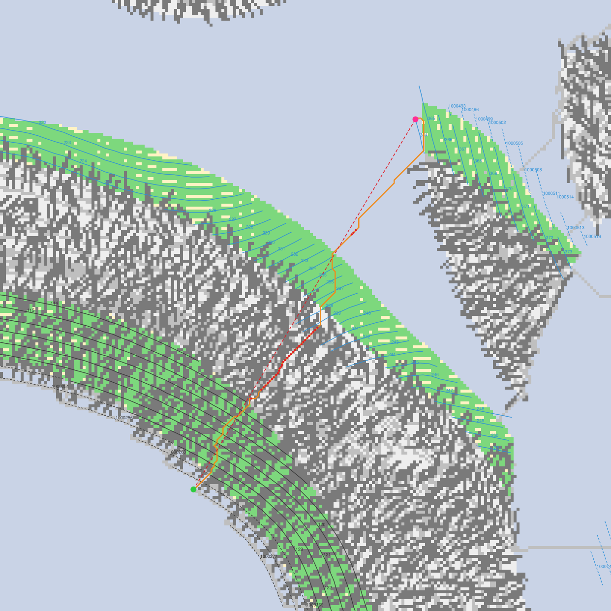
Cosa ha fatto il sistema. Nessuna strada nascosta accettabile: la macchina taglia. Distanza 73 mm.
strada 82.1 mm per 73.1 mm in linea d'aria · a vista 16.8 mm · costo medio 4.24
Come andrebbe fatto (Lorenzo). ancora da scrivere · scrivi la risposta per a3-1000273-364
a3-1000782-267 · taglio · ago 3 · da riga 1000782 a riga 267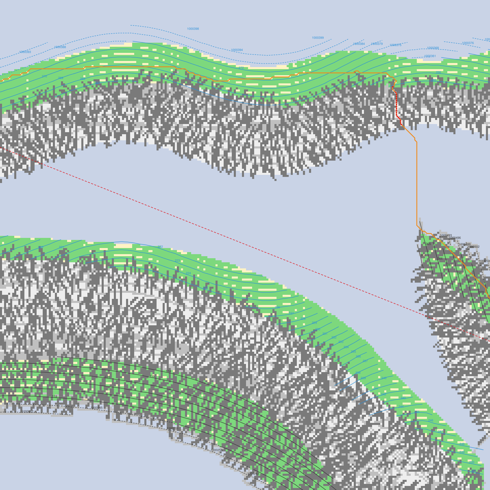
Cosa ha fatto il sistema. Nessuna strada nascosta accettabile: la macchina taglia. Distanza 177 mm.
strada 226 mm per 176.8 mm in linea d'aria · a vista 9.2 mm · costo medio 1.42
Come andrebbe fatto (Lorenzo). ancora da scrivere · scrivi la risposta per a3-1000782-267